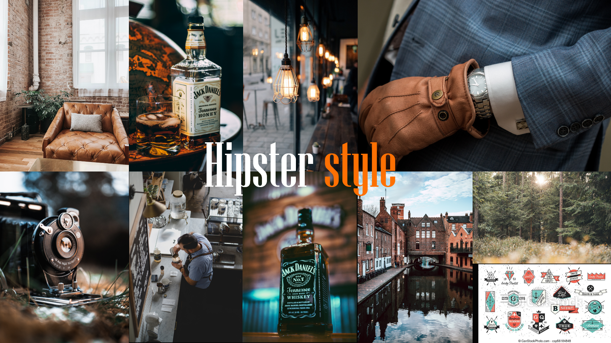
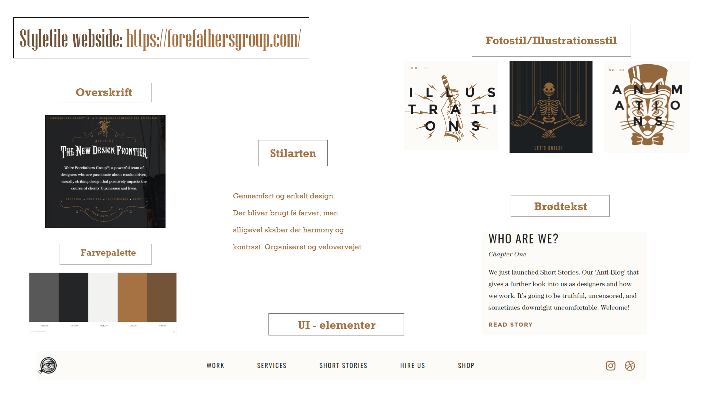
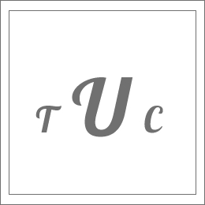
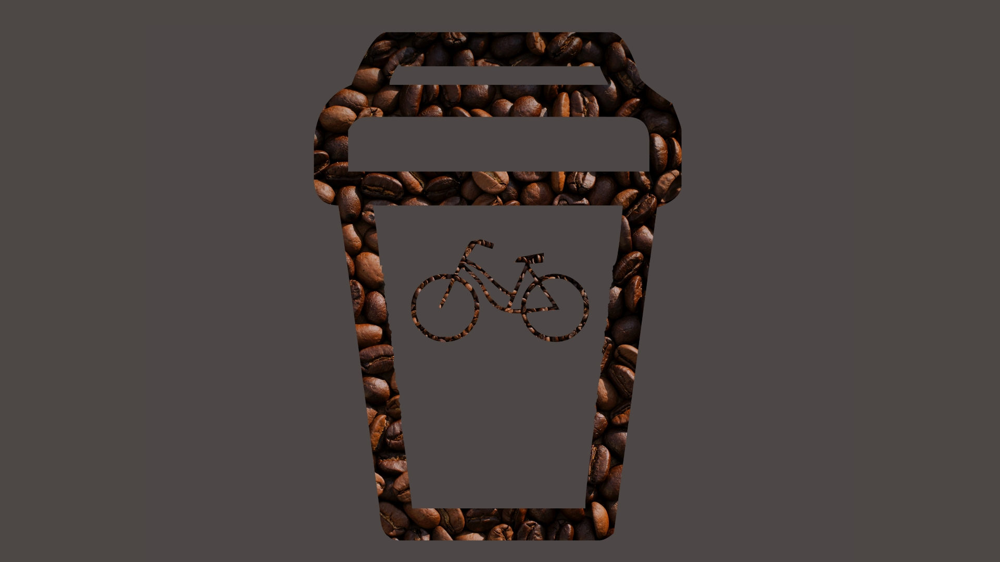

Tema 2 - Grundlæggende web
læringsaktiviteter
Tema 2 var bygget op af 4 moduler. I det første modul arbejde vi med at researche en tildelt stilart, og sammen med vores grupper skulle vi præsentere stilarten for vores medstuderende og lærere. Vi arbejdede med ide-generering, hvor vi lavede et moodboard og en mock-up (ud fra den udleverede wireframe) i Adobe XD. I modul 2 lærte vi at sætte en simpel mobiludgave af vores website op i html og lave layout med css, så den tilpassede sig til desktopudgaven fra det udleverede layoutdiagram. Vi sluttede af med at validere HTML og CSS efter W3C’s anvisninger og uploadede sitet til vores eget domæne via Filezilla. i modul 3 arbejde vi med det visuelle udtryk på vores hjemmeside. Vi skulle vælge hvilke fonte, farver og andre visuelle virkemidler hjemmesiden skulle have. Vi designede et ikon i Adobe XD og lærte om billede behandling i Photoshop, hvor vi designede et splashbillede til hjemmesiden. efterfølgende lærte vi at implementere disse visuelle elementer på hjemmesiden. I modul 4 skulle vi færdiggøre vores hjemmeside, og vi lærte at gøre vores hjemmeside responsiv med CSS via "media queries" og implementerede vores designvalg med CSS.
Modul 1
research
Vi var blevet inddelt i grupper og fået tildelt en stilart vi skulle kode vores hjemmeside ud fra. Vi researchede stilarten ved at læse nogle artikler om stilarten og kigge på andre hjemmesider med denne stilart og se hvilke elementer og design konvektioner der gik igen.
moodboard
Efter researchfasen lavede jeg et moodboard. Moodboardet er en del af idegeneringsprocessen, som hjælper med at skabe en stemning for det projekt man skal i gang med. Det beskriver stilen og den visuelle tone. Der kan være alt fra fotostil, fonte, farver, tekstur og lign. på et moodboard.
styletile
Vi lærte at lave et styletile, her skulle vi finde en hjemmeside med den samme designstil som gruppen havde fået tildelt. Derefter skulle vi i Adobe XD lave styletilet med de fonte, farver, ui-elementer og illustration/fotostil som hjemmesiden anvendte. Senere hen i forløbet kodet vi også et stylestile for vores egen hjemmeside med html og css.
Wireframe og Mock-up
Til Responsive_site_v2 havde vi fået udleveret en wireframe, dette skabte strukturen for vores hjemmeside. En slags skabelon til hvor indholdet skal placeres. Wireframen hjalp med at holde fokus på det grundlæggende layout for sitet. Derefter lavede vi et mock-up i Adobe XD, hvor vi byggede wireframen op og placerede indholdet til hjemmesiden i wireframen. Mock-up hjælper med at visualisere hvordan det endelige produkt skal se ud. I vores tilfælde var vi ikke nået til design fasen endnu, så det var udelukkende for at placerer indholdet.
02.01.03 Udleveret wireframeModul 2
Layoutdiagram
Til Responsive_site_v2 fik udleveret et layoutdiagram vi skulle kode hjemmesiden ud fra. Det hjalp os til at overholde den struktur der var i wireframen og/eller mock-up. I layoutdiagrammet tilføjer man html-elementerne, med deres evt. id/class navne, man kan også give grid- og flexelementerne hver sin farve. Dette hjalp med at skabe overblik da vi gik i gang med at kode hjemmesiden med html og css.
Udleveret layoutdiagramHTML og CSS
HTML er et kodesprog, som vi brugte til at opbygge strukturen til vores hjemmeside ud fra layoutdiagrammet. Vi startede med at kode en simpel mobilversion. Derefter anvendte vi CSS stylesheet for at implementere desktopversionen, med "media queries" for at gøre siden responsiv. CSS er også et kodesprog, men anvendes til at lave layout og style det visuelle udtryk på hjemmesiden.
modul 3
Farver og Fonte
I research fasen fandt jeg ud af at hipstersyle typisk anvender den samme farvepalette med farver som sort, grå, brun og hvid, samt en enkelt eller to farver til at skabe kontrast mellem de ellers meget mørke og rå farver. Accentfarverne der typisk bliver brugt, er rød/orange, blå og grøn. Vi lærte at anvende Adobe colorwheel for at finde den rette farvepallette til vores hjemmeside. Jeg undersøgte også hvilke skrifttyper (fonte) der typisk blev anvendt på andre hipsterstyle hjemmesider. Gennemgående for hjemmesiderne var de brugte en oldstyle font, såsom western eller kursivskrift. Jeg valgte at bruge fonten ”Lobster” og ”Lobster 2” til overskrifterne, hvilket passede godt til det visuelle udtryk på min hjemmeside og hipsterstilen generelt.
Ikon
I Adobe XD skulle vi lave et ikon til vores hjemmeside. Det implementerede jeg både som logo i headeren og som favicon i fanen i internetbrowseren.
Splashbillede
Vi skulle også udarbejde et splashbillede til vores hjemmeside, dette gjorde vi i Photoshop. Her lærte vi desuden også at beskære og gemme billeder i forskellige formater. Vi implenterede splashbillede som et baggrundsbillede i CSS.
